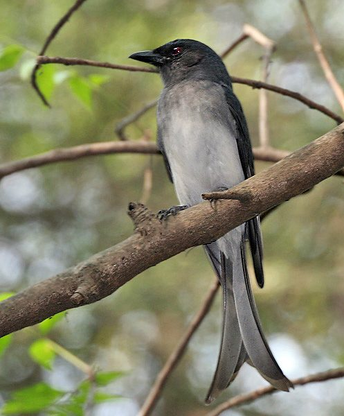

व्हाइट-बेलीड ड्रोंगोWhite-bellied Drongo
Dicrurus caerulescens · Dicruridae · BRD-0181

- Scientific name वैज्ञानिक नाम
- Dicrurus caerulescens (Linnaeus, 1758)
- Family कुल
- Dicruridae
- Hindi हिंदी
- व्हाइट-बेलीड ड्रोंगो
- Local names स्थानीय नाम
- white-bellied drongo, white bellied drongo, drongo
- Status here यहाँ की स्थिति
- native
- Movement आवागमन
- Resident, here all year
- Known from कहाँ दर्ज
- Others have published records from the Basti–Ayodhya districts बस्ती–अयोध्या के ज़िलों से दूसरों के प्रकाशित अभिलेख
- IUCN IUCN
- LC
- Review समीक्षा
- audited and independently read
When to look कब देखें
Present all year. साल भर मौजूद।
Uses and possibilities उपयोग और संभावनाएँ
Drawn from the documented uses in the profile below, where each is labelled traditional, current or a research lead. All uses →
Tell it apart from इनसे अलग पहचानें
व्हाइट-बेलीड ड्रोंगो / White-bellied Drongo
Dicrurus caerulescens (Linnaeus, 1758) — Dicruridae
व्हाइट-बेलीड ड्रोंगो — पूर्वी उत्तर प्रदेश के साल के जंगलों, बाग-बगीचों और खुले क्षेत्रों में पाई जाने वाली एक चतुर और आक्रामक काली चिड़िया, जो हवा में उड़ते-उड़ते कीटें पकड़ती है। इसके सिर, पीठ और पंख गहरे नीले-काले रंग के होते हैं, जबकि इसका पेट सफ़ेद होता है — इसीलिए इसका नाम "व्हाइट-बेलीड ड्रोंगो" है। यह चिड़िया बहुत दुस्साहसी होती है और अपने से बड़ी चिड़ियों को भी परेशान करती है। इसकी "भुजंगा" या "कोतवाल" नाम इसकी क्षेत्र की रक्षा करने की आदत से आता है।
Quick Identification त्वरित पहचान
| Feature | Description |
|---|---|
| Size | Small drongo; 26–28 cm long |
| Plumage | Glossy blue-black above; white belly distinctive |
| Head | Crested; glossy blue-black |
| Throat | Black, contrasting with white breast and belly |
| Tail | Stiff, forked; longer outer feathers |
| Bill | Small, hooked; black |
| Eyes | Red or crimson; alert |
| Behaviour | Aggressive; hunts from perch; chases larger birds |
Field tip: A small, glossy black bird with a distinctive white belly visible from below. Crested head and forked tail are diagnostic. Highly aggressive; watch for it harassing larger birds.
हिंदी — कैसे पहचानें:
काली चिड़िया — पेट सफ़ेद।
सिर पर कलगी।
पूँछ कटी हुई (forked)।
बहुत गुस्से वाली; बड़ी चिड़ियों को परेशान करती है।
Morphology आकारिकी
Biometrics:
| Measurement | Range |
|---|---|
| Total length | 260–280 mm |
| Wing (folded) | 130–145 mm |
| Tail | 130–145 mm |
| Bill | 14–16 mm |
| Weight | 32–40 g |
Size: 26–28 cm long; small drongo.
Plumage: Glossy blue-black to metallic blue-black overall; appears all black except belly region. Head feathered in crest.
Distinctive features: White belly patch highly visible, contrasting sharply with black throat and breast. The white belly extends from lower breast to undertail coverts, creating a striking pattern.
Crested head: Crown feathered with pronounced crest.
Eyes: Red to crimson; bright and alert; appear very striking.
Bill: Small, hooked and pointed; black; adapted for catching insects in flight.
Tail: Forked, with outer tail feathers longer and more strongly curved than in Black Drongo.
Legs and feet: Black; relatively short.
Sexes: Monomorphic (sexes similar); males average slightly larger.
Juveniles: Duller than adults; less glossy black plumage; red eye less bright.
Vocalisations. Call repertoire:
- Contact call: Variety of harsh, metallic calls; trrrruk-trrrruk or sharp chit-chit.
- Flight call: Rapid, chattering calls while pursuing insects.
- Alarm call: Harsh, scolding calls when alarmed or chasing intruders.
हिंदी: तेज़ "चित्रीक-चित्रीक" या "तर्र-तर्र" आवाज़ करता है। गुस्से में बहुत शोर मचाता है।
Behaviour & Ecology व्यवहार और पारिस्थितिकी
Aerial insectivore: White-bellied Drongos are agile aerial hunters, catching insects in flight. Diet consists of:
- Flies and gnats
- Small moths and butterflies
- Small dragonflies
- Other aerial insects
Feeding method: Hunt from exposed perch (dead branch, tree-top); sally into air to catch insects; return to perch. Remarkable agility in flight.
Aggressive behaviour: Highly pugnacious; chase and harass larger birds including crows, mynas, kites, and even eagles from territory. Will mob predators.
Social behaviour: Solitary or in pairs; maintain territory year-round. Highly aggressive toward other drongos.
Territory: Defend feeding and nesting territories vigorously; highly visible presence in territory.
Flight: Swift, direct, and highly manoeuvrable; can hover and change direction rapidly.
हिंदी: हवा में कीटें पकड़ता है। बहुत तेज़ और फुर्तीला। अपना इलाका बहुत सख़्ती से बचाता है। बड़ी चिड़ियों को भी भगा देता है।
Life Cycle / Phenology जीवन चक्र
Year-round resident: Breeds in the region; no seasonal migration.
Breeding: March–August; peaks May–July in Uttar Pradesh. Monogamous; sometimes with helpers.
Nest: Cup-shaped nest of fine roots and grasses, suspended in horizontal fork of tree branch.
Clutch: 2–4 eggs (usually 3); incubation 14–15 days.
Fledging: Young leave nest at 16–18 days. 2–3 broods per breeding season possible.
Territoriality: Pairs maintain territories year-round; display and call frequently from elevated perches.
Feeding: Activity peaks in early morning and late afternoon; rest during midday heat.
हिंदी: साल भर रहता है। मार्च से अगस्त में अंडे देता है। 3-4 अंडे देता है। 18 दिन में बच्चे उड़ जाते हैं।
Host Plants or Prey आहार
| Food Type | Examples | Feeding Behaviour |
|---|---|---|
| Flies and gnats | Small dipterans | Sally-catch from perch |
| Small moths and butterflies | Microlepidoptera | Pursue in flight |
| Dragonflies and damselflies | Small Odonata | Snatch from air |
| Small beetles and wasps | Various small insects | Opportunistic gleaning |
हिंदी: सिर्फ कीटें खाता है। हवा में उड़ते-उड़ते पकड़ता है। बहुत तेज़ी से शिकार करता है।
Predators / Natural Enemies शत्रु
- Avian predators: Shrikes, small eagles, kites (though aggressively defended against)
- At nest: Crows, snakes, parasitic wasps
- Mammalian predators: Unlikely due to small size and arboreal nesting
- Parasites: Avian parasites, blood parasites
हिंदी: कौवे और बाज़ इसका शिकार कर सकते हैं। घोंसलों को साँप परेशान कर सकते हैं। अपना बचाव करने में बहुत अच्छा है।
Agricultural / Human Relevance कृषि प्रासंगिकता
Pest control: Feeds extensively on insects including some pest species; contributes to natural insect control in agricultural areas.
Territory and visibility: Highly visible in its territory; serves as an indicator of healthy local ecosystem with adequate insect fauna.
Behaviour: Known for aggressive territoriality and mob behaviour; sometimes viewed negatively for chasing away other birds (though this serves ecosystem function).
हिंदी: यह चिड़िया वन्यजीव अधिनियम 1972 की अंतर्गत संरक्षित है। कीटें खाती है, जो कृषि के लिए महत्वपूर्ण है। बगीचों और खेतों में देखी जाती है।
Expected Locally स्थानीय रूप से अपेक्षित
Not a field record. Written from published accounts for eastern Uttar Pradesh. No confirmed local sighting yet — if you have seen it, that is what the atlas needs.
अभी तक स्थानीय पुष्टि नहीं। यह विवरण प्रकाशित स्रोतों से है, किसी अवलोकन से नहीं।
This species is NOT a field record. The distribution below is based on published sources describing where White-bellied Drongo should be looked for in eastern Uttar Pradesh.
Range: Expected in deciduous woodlands, gardens, and open areas throughout Basti–Ayodhya region.
Habitat preference: Open or semi-open areas with tall perching sites (dead branches, tree-tops); areas with adequate insect populations.
Seasonality: Resident year-round; locally nomadic following insect availability and breeding movements.
Published records: GBIF holds published records from these districts.
What a first record would be: A dated photograph clearly showing the bird's distinctive white belly and blue-black plumage, with GPS coordinates and date, submitted through the About page.
हिंदी: यह चिड़िया स्थानीय रूप से अपेक्षित है। साल भर पेड़ों की चोटियों पर देखी जाती है। बागों में भी मिलती है।
Distribution वितरण
Global range: Indian subcontinent and Southeast Asia. Multiple subspecies across range.
In India: Distributed across much of the Indian subcontinent in suitable woodland and garden habitat.
In Uttar Pradesh: Resident throughout northern and eastern districts with suitable woodland.
In Basti district / eastern UP: Resident in sal forests, gardens, and open woodlands; expected in suitable habitat.
Research Questions शोध प्रश्न
- What is the diversity and abundance of insects targeted by White-bellied Drongos across different habitat types?
- How does territorial behaviour and home-range size vary with habitat quality and insect availability?
- Do White-bellied Drongos show any seasonal shifts in diet or foraging habitat preferences?
- क्या इस चिड़िया की आक्रामक व्यवहार के कारण दूसरी चिड़ियों की संख्या में प्रभाव पड़ता है?
- What is the breeding success rate in different habitat types, and what factors limit productivity?
- क्या खेतों में कीटनाशकों के उपयोग से इस चिड़िया को नुकसान हो रहा है?
Similar Species मिलती-जुलती प्रजातियाँ
| Species | Key Difference | Hindi | Field Rule | |
|---|---|---|---|---|
| [[black_drongo\ | Black Drongo]] (Dicrurus macrocercus) | All black (no white belly); less forked tail; slightly larger | भुजंगा / कोतवाल | Black Drongo lacks the distinctive white belly. Look for the striking white belly patch in White-bellied. |
| [[ashy_drongo\ | Ashy Drongo]] (Dicrurus leucophaeus) | Greyish overall; no white belly; different habitat | राख रंग भुजंगा | Ashy Drongo is greyish, not blue-black. No white belly. |
Field rule: White-bellied Drongo is distinguished by its glossy blue-black plumage with a striking white belly. The combination of white belly, crested head, red eye, and small size is unique among drongos.
Taxonomy & Classification वर्गीकरण
Original description. Described by Carl Linnaeus in 1758 in Systema Naturae (10th edition), volume 1, page 139, as Muscicapa caerulescens. Type locality is India.
Subspecies. Monotypic — no subspecies are currently recognised.
Family and order placement. Order Passeriformes; family Dicruridae (drongos). The genus Dicrurus contains the drongos, aerial insectivores of the Old World.
Phylogenetic notes. Closely related to Black Drongo and other drongo species. Part of a clade of Old World aerial insectivores.
IUCN status rationale. Assessed as Least Concern (LC) globally. Populations remain widespread and stable. Habitat retention in gardens and open woodlands supports populations despite some deforestation.
हिंदी: यह चिड़िया पूरे भारत में मिलती है। साल भर रहती है। कानून से संरक्षित है।
Photo Gallery फोटो गैलरी
No photos yet — add field photos to media/species/white_bellied_drongo/ and run node scripts/sync_photos.js.
Wanted photos:
- Perched showing white belly clearly visible
- In flight with forked tail visible
- Chasing insect mid-air
- Pair at nest site
- Aggressive interaction with other bird
References संदर्भ
- Linnaeus, C. (1758). Systema Naturae per Regna Tria Naturae (10th edn). Laurentii Salvii, Holmiae. Vol. 1, p. 139.
- Ali, S. & Ripley, S. D. (1972). Handbook of the Birds of India and Pakistan. Vol. 7 (Warblers to Redstarts). Oxford University Press, Delhi. Pp. 33–35.
- Cramp, S. (ed.) (1988). Handbook of the Birds of Europe, the Middle East and North Africa: The Birds of the Western Palearctic. Vol. 5 (Warblers to Dippers). Oxford University Press. Pp. 220–243.
- Rasmussen, P. C. & Anderton, J. C. (2005). Birds of South Asia: The Ripley Guide. Smithsonian Institution, Washington. Vol. 2, pp. 208–210.
- GBIF Occurrence Data — Dicrurus caerulescens, India.
- IUCN Red List (2023). Dicrurus caerulescens — BirdLife International assessment. IUCN, Cambridge. Status: Least Concern.
Source file: species/fauna/birds/white_bellied_drongo.md